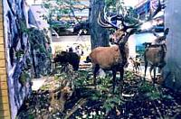
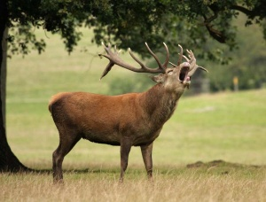
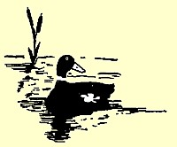
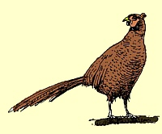
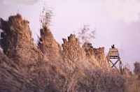
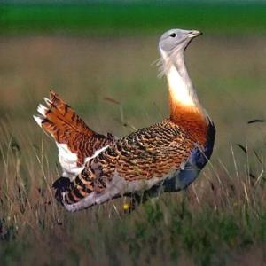
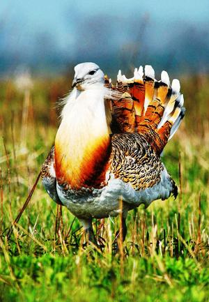

| Angeln und Jagd in Ungarn |
|
|
|
|
|
|
|
|
 |
|
|
 |
|
|
|
|
|
|
|
|
| Jagd in Ungarn |
| Jagd in Ungarn - waidmännisch |
|
Wir vermitteln, planen und organisieren die Jagd für Einzeljäger und
kleinere Jägergruppen - je nach Wild und Saison bis zu einer
Gruppengröße von 15 Jägern. Staatsjagd ist auch kein Fremdwort für
uns. Auf Wunsch begleitet Sie ein in Ungarn sprach- und
landeskundlicher Forstmann aus Deutschland - bis zum erfolgreichen
Abschuss. Bei Bedarf werden Sie ins Revier gefahren und auch
zurückgebracht - Haus zu Haus. Bei Interesse teilen Sie uns folgende
Angaben mit: |
|
|
Vorwort Weltrekord-Trophäen, traditionelle Gastfreundschaft mit grossen Traditionen, weltberühmte Gastronomie und Weinkultur, unberührte Natur, auf hohem Niveau stehende Wildwirtschaft, kombinierbare Jagdtouren, ein reich gefächertes Programmangebot auch für Begleitpersonen, in jeder Saison unvergessliche Erlebnisse bietende Jagden – das sind die Vorzüge, die von Jahr zu Jahr mehr ausländische Jäger veranlassen, Ungarn zu besuchen. Die Jagd als Form der aktiven Erholung wird auch bei den Ungarn selbst immer populärer, bieten doch die praktisch im ganzen Land vorhandenen Jagdgebiete mit ihrer Wildwirtschaft sowohl für Anfänger als auch für erfahrene Jäger hervorragende Möglichkeiten. In der Nähe der Hauptstadt Budapest sind das Pilis Gebirge und das Budaer Gebirge, die vor allem an Rot-, Dam- und Muffelwild reich sind. Hier gaben sich einst berühmte Politiker die Hand, wie Franz Josef Strauss oder die Generalsekretäre Kádár, Honecker und Breznew. Das Börzsöny Gebirge und die Gegend um Gödöllö verfügen über einen Rot- und Schwarzwildbestand mit Trophäenwert. In der Mittleren Donaulandschaft, vor allem in der südlichen Ebene mit ihren reichen Beständen an Niederwild, wie Hasen und Fasanen, kommen Exemplare mit kapitalen Trophäen vor. |
|
TRANSDANUBIEN - das Land westlich der Donau In Mittel-Transdanubien sind sämtliche jagdbaren Arten von Hoch- und Niederwild zu finden. Den Jagdgästen bieten sich zahlreiche attraktive Reiseziele an: Das mit Eichen-, Buchen- und Nadelwäldern sowie an vielen Stellen mit Jungwuchs bedeckte Bakony Gebirge erwartet die Jäger mit allen einheimischen Hochwildarten, |
|
Die
Kleine Tiefebene mit ihrem Bestand an Rotwild und Reh,
Soponya im Komitat Fejér mit Fasanen, die Gegend um Martonvásár mit
ihren Rehböcken, die jahrelang die Weltranglisten angeführt haben, das Gerecse Gebirge mit seinem Schwarzwildbestand und das Vértes Gebirge mit ihren Schnepfenumzügen im Frühjahr (Jagdsaison: 1. März – 10. April). |
|
In der Region
West-Transdanubien - im
Komitat Zala mit seinem feuchten Klima und dem gegliederten
Bodenrelief – gibt es einen weltberühmten Rotwildbestand, aber auch
die Jagd auf Schwarzwild ist hier möglich. Im Komitat Vas ist neben
der Jagd auf Schwarzwild auch die Gemeinschaftsjagd auf Niederwild
beliebt, im Hanság wiederum besteht die Möglichkeit zur Teilnahme an
erlebnisreichen Jagden auf Wasserwild. Das als Jagdschmankerl
geltende Muffelwild kann am Fuße der Alpen und im Keszthely-Gebirge
erlegt werden. Die Gegend um den sonst eher von der Sommerfrische
bekannten Plattensee ist reich an Niederwild – vor allem an
Wasserwild. |
|
Eine hervorragende Bedeutung für die Jagd hat die Region
Süd-Transdanubien. Kleinwild findet man hier relativ wenig,
dagegen gibt es einen reichen Bestand an Rot- und Damwild. Zselic,
Somogy und Gemenc sind dafür berühmt, dass es für die hier erlegten
Rothirsche jedes Jahr Goldmedaillen gibt. Franz Josef Strauss war
ein Dauergast in den hiesigen Jagdreservaten Gemenc, Gyulaj und
entlang der Drau an der Grenze zu Kroatien. Im Wald von Gyulaj
besteht die Chance, unter den Damhirschen einen Weldrekordler vor
die Büchse zu bekommen, aber auch Schwarzwild und Reh bedeuten eine
Bereicherung der Jagdbeute. |
|
Die Grosse Ungarische Tiefebene
ist reich an Niederwild, was unter anderem auch der künstlichen
Zucht zu verdanken ist. Neben der Fasanen- und Hasentreibjagd ist
auch die Wildenten- und Rehjagd beliebt. Die waldreichen Gebiete von
Nordungarn bieten sich für die Grosswildjagd an, nebenbei kommt hier
das Schwarzwild fast überall vor. Obwohl das Rotwild hier von
geringerer Qualität als in anderen Gebieten Ungarns ist, werden die
Jäger durch die wunderbare landschaftliche Umgebung entschädigt. In
den Feuchtgebieten ist die Stockente das häufigste Federwild, und
die Schnepfensaison (1. März bis 10. April) bedeutet für die Jäger
ein echtes Schmankerl. |
| Burg
Vajdahunyad in Budapest mit ständiger Jagdausstellung im Landwirtschaftsmuseum |
| Adresse: Vajdahunyadvár im 14. Stadtbezirk,
gleich hinter dem Heldenplatz, rechts hinter dem Millennium
Denkmal, hinter dem Stadtwaldsee. |
|  | Zum Millennium der ungarischen Staatsgründung im Jahre 1896 wurde im Stadtwäldchen ein architektur-geschichtlicher Gebäudekomplex aus einer Mischung von romanischen, gotischen, Renessaince- und Barockelementen errichtet. Hier befindet sich die Ausstellung zur Landwirtschaft, Jagd und Forstwirtschaft mit vielen Rekord-Trophäen aus ganz Ungarn. |
|
|
|
1. Jagdbare
Wildarten in Ungarn In Ungarn sind während der Jagdsaison folgende Tierarten jagdbar: der Edelhirsch o. auch Rothirsch genannt, der Damhirsch, die Gemse, der Muflon, das Wildschwein, der Sikahirsch, der Japanischer Sikahirsch, der Dybowski-Sika. Von den Kleinwildarten: der Feld- und das Waldkaninchen, der Bandiltis, der Marder, der Baummarder, der Dachs, der Fuchs, der Goldwolf, die Bisamratte, der Steinmarder, der Waschbär, der Fasan, das Rebhuhn, die Wachtel, die Saatgans, die Blässgans, die Zwerggans, die Stock- und Knackente, die Krickente, die Tafelente, die Schellente, die Blässhuhn, die Waldschnepfe, die Turteltaube, die Wildtaube, die Ringeltaube, der Habicht, die Saatkrähe, die Nebelkrähe, die Elster, der Häher, die Gelbfußmöwe, der Kormoran (die Scharbe) und der Star. |
| 1.1 Die wichtigsten jagdbare Wildarten in Ungarn |
|  | ROTWILD - Der ungekrönte König in den ungarischen Wäldern. Zur Erhaltung der Qualität der Rotwildpopulation trägt der optimale Lebensraum und die artgerechte Waldwirtschaft bei. Die berühmteste Rotwildpopulation können die Komitate Zala, Somogy und Baranya aufweisen - sie befinden sich in der süd-südwestlichen Mitte von Ungarn. Hier findet das Rotwild die Ruhe und Deckung im Unterholz, die es braucht - dazu dichte Eichen- und Auenwälder, so auch Waldlichtungen, sodass der Anteil der medaillengekrönten Trophäen - je nach Abschußquote - im Jahresdurchschnitt 30-35% beträgt. |
|
Das ungarische Rotwild "Cervus elaphus" ist, wie seine in Deutschland lebenden Artgenossen, von der gleichen Art, jedoch von einer anderer Rasse. Der Unterschied ist augenfällig. Das ungarische Rotwild ist größer und von deutlich kräftigerer Statur. Kreuzungsversuche im hessischen Raum scheiterten an der Unverträglichkeit der Blutbilder der beiden Rassen. |
|
REH Den wichtigsten Lebensraum des in Eurasien weit
verbreiteten Rehs stellen an Felder und Wiesen angrenzende
Waldränder mit dichtem Unterholz, vielen Sträuchern und seltenem
Baubestand dar. Die Trophäen der hier erlegten Rehe gehören zu den
Weltbesten. Die Rehböcke mit der besten Qualität werden entlang der
Flüsse Theiss und Körös in den Komitaten Szolnok und Békés zur
Strecke gebracht. |
|
DAMWILD Das Damwild liebt vor allem ebene oder leicht
hügelige Landschaften und Laubwaldflecken, die sich mit kleinen
landwirtschaftlich genutzten Gebieten abwechseln. Die berühmteste
Dampopulation ist die von Gyulaj - hier sind schon serienweise
Weltrekorde erzielt worden. Der Schaufel wird jedes Jahr abgeworfen,
wegen seiner besonderen Form ist er eine der beliebtesten
Jagdtrophäen. |
|
MUFFELWILD
Das Muffelwild wurde von den Inseln Korsika und Sardinien in
Ungarn eingebürgert. Es liebt Laub- und Nadelwälder und kommt in
den Gebirgen im Nordosten des Landes in großer Zahl vor. Zur
Muffeljagd braucht man aufgrund des gebirgigen Geländes Ausdauer
und Erfahrung, aber der Lohn könnte ein Bockshorn – eine so
genannte Schnecke - sein. Das den Kopf des Widders zierende Horn
wächst ständig nach und kann eine Länge von bis zu 100 cm und
einen Umfang von bis zu 24 cm erreichen. |
| SCHWARZWILD Das in ungarischen Wäldern am häufigsten vorkommende Stangenwild ist das Schwarzwild, das sich gern in Laubwäldern mit dichtem Unterholz, feuchtem Boden und zahlreichen Sümpfen aufhält. Die Erfahrung des Schwarzwildes mit Jägern, sein scharfes Gehör, sein guter Geruchssinn und seine Intelligenz machen die Schwarzwildjagd zu einem überaus aufregenden Erlebnis. |
|
WASSERWILD Dank seiner
zahlreichen Feuchtbiotope und seiner reichen Fauna gilt Ungarn
auch als Paradies für die Jagd auf Wasserwild. FEDERWILD Bei hundeführenden Jägern ist die Jagd auf verschiedene Arten von Enten, auf Wildgänse, Blässgänse und Saatgänse (Umzug) sehr beliebt. |
 |
| Hinsichtlich der Populationsdichte der Fasanen und der Jagdausbeute pro Jäger nimmt Ungarn den ersten Platz in der Welt ein - Dank künstlicher Auffüllung des Bestandes. Die Jagd auf den Fasan, der sich gern in Auwäldern und Gebüschen aufhält, kann gut mit der Jagd auf Rebhühner und Hasen kombiniert werden. Sinnvoll ist dies, weil die Hasenjagd selbst am anstrengendsten ist und die größte Geschicklichkeit erfordert. |  |
|
SCHNEPFE
Die häufig ergebnislose, jedoch außerordentlich aufregende
Schnepfenjagd (Umzug) ist in Europa nur an wenigen Orten möglich,
eben deshalb erfreut sich die Jagd auf die in Ungarn als Zugvögel
lebenden Schnepfenhähne mit ihrem gedrungenen Körperbau und dem
langen Schnabel während des Brautfluges großer Beliebtheit. |
|
TAUBEN
Die Balkantaube
und die Ringeltaube
sind überall in Ungarn zu finden. Die auf Sonnenblumenfeldern
beziehungsweise abgeernteten Getreidefeldern veranstaltete Jagd ist
für jeden Jäger eine ausgezeichnete sommerliche Schiessübung - mit
der Schrotflinte. |

|  |
Ausländische
Staatsbürger dürfen nur in Begleitung eines Berufsjägers
oder des Oberjägers jagen. Die Gäste sind verpflichtet, während
der Dauer der Jagd die Weisungen des begleitenden Jägers zu
befolgen, und dürfen nur solche Wildarten abschießen, die in ihrer
Genehmigung angeführt sind. Bei der Gruppenjagd dürfen sich die Gäste auch allein auf dem Anstand befinden. In diesem Fall sind sie zu einer noch strikteren Einhaltung der Weisungen verpflichtet. |
|
Da die meisten Probleme bei
der Einzeljagd auf Kleinwild (darunter vor allem bei der Jagd auf
Wasserwild) entstehen, ist den Gastjägern zu empfehlen, sich
besonders aufmerksam mit den nicht jagdbaren Arten vertraut zu
machen, um Fehlabschüsse (und damit die Verletzung der ungarischen
Jagd- und Umweltschutzgesetze) zu vermeiden.
|
|
4.4. Jagdtrophäe - Trophäenschau, Ausfuhr von Trophäen und Fellen in
die EU |
|
Zur Identifizierung des erlegten
Hochwildes werden vom Jagdleiter unmittelbar nach der Erlegung
Rotten angebracht, die in Ungarn "Chrotalien" bezeichnet werden. An
der Grenze können die Chrotalien durch den Zollbeamten geprüft
werden – ihre laufende Nummer muss mit der in der Abschussliste und
bei der Trophäenbewertung eingetragenen Nummer übereinstimmen. Die innerhalb von 30 Tagen obligatorische und mit der Zahlung der Beurteilungsgebühr verbundene Trophäenbewertung ist bei Geweihen von Rothirschböcken, Damhirschböcken und Rehböcken sowie Hauern von Mufflons und Wildschweinen (über 16 cm) erforderlich. Vor der Beurteilung (mit Ausnahme von Wildschweinhauern) bohrt die Jagdbehörde in den Stamm der rechten Rosenstocks zur Bestätigung der erfolgten Beurteilung ein Loch und stellt nach der Beurteilung eine Bescheinigung über deren Ergebnis aus. Diese wird auch in den Jagdausweis sowie in die individuelle Abschussliste des Jägers eingetragen. Die für die Ausfuhr erforderliche Genehmigung wird in die Jagdgenehmigung eingetragen. Über die Trophäen des vorschriftsmäßig erlegten Wildes stellt die Behörde dem Jäger– wenn das Punktlimit der Medaille erreicht wird – eine Urkunde aus und übergibt ihm eine Medaille. Sollte eine Trophäe zum Staatsschatz erklärt werden, so erhält der Jäger eine Fotografie und hat außerdem Anspruch auf eine Entschädigung, deren Höhe in der Rechtsnorm festgelegt ist. Solche Trophäen dürfen nur mit einer speziellen Genehmigung des Ministeriums aus dem Land ausgeführt werden. Das die Jagd veranstaltende Büro ist verpflichtet, die für die Ausfuhr der Trophäe beziehungsweise des erlegten Wildes erforderlichen Exportpapiere auszustellen. Mit Rücksicht auf die für die Ausfuhr von Wildfellen in die Mitgliedsländer der EU geltenden strengen Vorschriften ist es zweckmäßig, sich gründlich zu informieren. |
|
4.5. Naturschutz - Wissenswertes für Jäger |
|  | Artenschutz - Es gibt eine größere Otis tarda (Großtrappen-) Population in der Puszta bei Hortobágy. Die Trappen stehen selbstverständlich auch in Ungarn unter Naturschutz und sind keine jagdbaren Wildtiere, weil die Population in der Puszta ein von den letzten natürlichen Vorkommen der Großtrappen in Europa ist. |  |
|
Einige Beispiele dafür, wie der Naturschutz vielerorts übertrieben ist: Es ist allgemein bekannt, dass in Deutschland eine Reihe von jagdbaren Wildtieren unter Naturschutz stehen, hierfür jedoch bereits seit Jahrzehnten keinen Grund gibt und für manche nie gab. Der Kormoran ist für die Fischer am Ammersee eine Plage, der Star ist für die Winzer an der Südlichen Weinstrasse und für die Kirschbauer im Alten Land in Hamburg eine Plage mit katastrophalen Folgen, weil es zuviel davon gibt. Auch die Schnepfe ist vielerorts in Europa in so großr anzahl vorhanden, dass sie auf den Speisekarten zu finden ist. Es ist daher selbstverständlich, dass die drei hier genannten Vogelarten, von denen extrem viel in Ungarn gibt, dort gejagt werden dürfen. Auf die Saat-, Nebelkrähe und Gelbfußmöwe darf sogar im ganzen Jahr geschossen werden. Es gibt soviel davon in Ungarn, dass sie dort eine Plage bedeuten und die Waidmänner zur Regulierung der Population aufgerufen sind. In Ungarn sind derzeit rund 300 Gebiete mit nationaler und mehr als 1.000 mit regionaler Bedeutung geschützt, mehr als in anderen europäischen Ländern. Die meisten Landschaftsschutzgebiete (LSG) und Naturschutzgebiete (NSG), vor allem die Nationalparks stehen allen Naturfreunden zu einem Besuch offen. Das kann der Jäger für den Naturschutz tun: 1. Jäger betreiben Naturschutz seit eh und je, indem sie Refugien (Äsungsflächen und Waldschonungen) für seltene, vom Aussterben bedrohte Wildarten bereitstellen;
2. Jäger betreiben Naturschutz, indem sie dort in die
Regulierung der Populationsdichte eingreifen, wo freilebende
Räuber kaum oder überhaupt nicht mehr vorhanden sind und daher
eine natürliche Bestandsregulierung nicht mehr stattfindet. Wer
möchte heute mit Bär, Wolf oder Löwen direkt benachbart wohnen?
Es gibt solche Großstadtbewohner und sog. Tierfreunde, die am
Beispiel von humanisierten Exemplaren das Zusammenleben mit
diesen Großräubern empfehlen, sich jedoch das Zusammenwohnen mit
echten Raubtieren in der Wildnis nicht wagen. Die Großräuber waren mal einheimisch in Europa und wurden im Kampf um die
nackte Existenz vom Mensch besiegt - weniger brutal, als diese
Raubtiere mit dem Mensch umgehen würden, wenn sie die
Gelegenheit dazu bekämen, wie zahlreiche Bärenangriffe an
Ackerbauern z.B. in den rumänischen Karpaten zeigen.
|
|
5. Empfohlene Schutzimpfungen für Jäger 5.1. Hepatitis A 5.2. Hepatitis B 5.3. FSME (April bis Oktober in zeckengefährdeten Gegenden --> im Wald) 5.4. Tollwut |
|
Burg Füzér im Nordosten von
Ungarn: |
|
Ungarn-Tourist Team
|